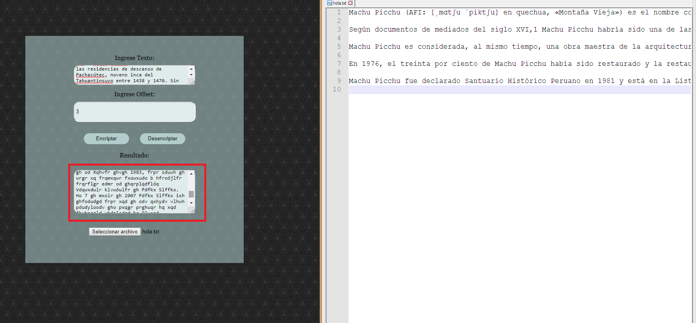

<div id="single-portfolio">
	<div id="portfolio-details" class="container">
		<a class="close-folio-item" href="#"><i class="fa fa-times"></i></a>
		
		<div class="row">
			<div class="col-sm-9">
				<div class="project-info">
					<h3>Cipher</h3>
					<p>
						Es una página web que permite al usuario encriptar o desencriptar información.
						El propósito de este proyecto fue guardar información confidencial generándola con una llave llamada Offset, esta llave será la única quien podrá encriptar o desencriptar dicha información, por tanto, no deberá ser extraviada.
					</p>
				</div>
			</div>
			<div class="col-sm-3">
				<div class="project-details">
					<h3>Detalles del proyecto</h3>
					<p><span>Cliente: </span>Laboratoria</p>
					<p><span>Fecha:</span> 4 Dic 2018</p>
					<p><span>Tipo:</span> Pagina Web</p>
				</div>  
			</div>
		</div>
	</div>
</div>